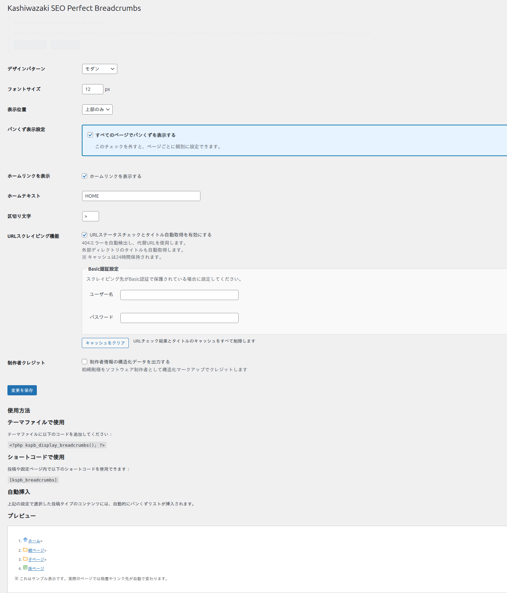
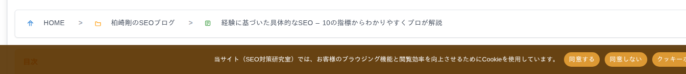

詳細設定
URLスクレイピング、ショートコード、自動挿入位置など、Kashiwazaki SEO Perfect Breadcrumbs の詳細な設定項目を解説します。
URLスクレイピング機能
本プラグインは、パンくず内の外部リンクに対して自動的にURLスクレイピングを行い、リンク先ページのタイトルを取得します。これにより、外部リンクのパンくず項目にも適切な名前が表示されます。

フロントエンド表示例

仕組み
パンくず内に外部URLが含まれている場合、プラグインは wp_remote_head でURLのステータスコードを確認します。
ステータスが正常（200）であれば、wp_remote_get でページのHTMLを取得し、<title> タグからページタイトルを抽出します。
取得した結果はTransientキャッシュ（24時間）に保存され、次回以降のアクセスではキャッシュからデータを返します。
スクレイピング時のUser-Agentは KSPB Breadcrumbs Bot/1.0 で、タイムアウトは5秒に設定されています。サーバー負荷を最小限に抑えるよう設計されています。
URLステータス検出と自動補正
プラグインはURLのHTTPステータスコードを検出し、問題のあるリンクに対して自動的に対応します。
| ステータスコード | プラグインの動作 |
|---|---|
| 200 OK | 正常なリンクとしてそのまま表示します。 |
| 301 Moved Permanently | リダイレクト先のURLを検出します。同一ドメインの場合のみ代替URL候補として扱います（外部サイトへの自動追跡は行いません）。 |
| 302 Found | 一時的なリダイレクトを検出します。同一ドメインの場合のみ代替URL候補とします。 |
| 404 Not Found | リンク切れを検出し、管理者に通知します。代替URLの手動設定が可能です。 |
URLスクレイピングは外部サーバーへのHTTPリクエストを伴います。大量の外部リンクがある場合、Transientキャッシュが切れた際に一時的にページ生成が遅くなる可能性があります。
Basic認証対応
Basic認証が必要なURLに対しても、ユーザー名とパスワードを設定画面から登録することでスクレイピングが可能です。認証情報は暗号化して保存されます。
ショートコードの使い方
パンくずナビゲーションを任意の場所に手動で挿入するには、ショートコード [kspb_breadcrumbs] を使用します。
基本的な使い方
投稿や固定ページの本文エディタ内で、パンくずを表示したい位置に以下を記述します。
[kspb_breadcrumbs]ショートコードはウィジェットエリアやテンプレートファイル内でも使用可能です。テンプレートファイルで使う場合は <?php echo do_shortcode('[kspb_breadcrumbs]'); ?> と記述してください。
自動挿入との併用
自動挿入とショートコードを同時に使用すると、パンくずが二重に表示される場合があります。ショートコードを使用する場合は、設定画面で自動挿入を「無効」に設定することを推奨します。
自動挿入位置の詳細
自動挿入位置は、WordPressのアクションフックを利用してパンくずを挿入します。27種類のフックポジションが用意されており、テーマの構造に合わせて最適な位置を選択できます。
主なフックポジション
| フック名 | 挿入位置の説明 |
|---|---|
| wp_body_open | <body> タグ直後。ページ最上部に表示されます。 |
| the_content（前） | 記事本文の直前に挿入されます。 |
| the_content（後） | 記事本文の直後に挿入されます。 |
| loop_start | メインループの開始時に表示されます。 |
| wp_footer | ページフッター領域に表示されます。 |
使用中のテーマがすべてのフックに対応しているとは限りません。パンくずが期待どおりの位置に表示されない場合は、別のフックポジションを試してください。
表示対象の投稿タイプ
パンくずの自動挿入は、以下の投稿タイプで有効です。
- 投稿（post）
- 固定ページ（page）
- カスタム投稿タイプ
- カテゴリ・タグアーカイブ
- 日付アーカイブ
- 著者アーカイブ
- 検索結果ページ
- 404ページ
トップページ（フロントページ）ではパンくずは自動的に非表示になります。これは、トップページがパンくずの起点（ホーム）であるためです。
キャッシュ管理
URLスクレイピングの結果はWordPressのTransient APIを使用して24時間キャッシュされます。キャッシュにより、同じURLへの重複リクエストを防ぎ、ページ表示速度を維持します。
| 項目 | 詳細 |
|---|---|
| キャッシュ方式 | WordPress Transient API |
| 有効期間 | 24時間（自動更新） |
| 保存先 | wp_options テーブル（オブジェクトキャッシュ利用時はメモリ） |
| 手動クリア | 設定画面の「キャッシュクリア」ボタンで即座に削除可能 |